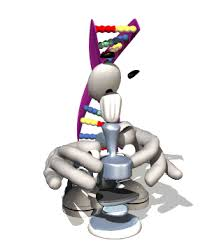

Cómo navegar en el OVA: Instrucciones de Uso
MICROSCOPIO ÓPTICO
Bienvenidos al Objeto Virtual de Aprendizaje “Microscopio Óptico”. Este instructivo te guiará paso a paso para recorrer todas las secciones del OVA, interactuar con los recursos y completar las actividades de forma sencilla.
INTRODUCCIÓN
Al comenzar encontrarás una presentación general del contenido del OVA y su propósito. Puedes avanzar con el botón “Siguiente” o regresar al “Menú” en cualquier momento.
OBJETIVOS
Aquí se muestran los aprendizajes que se busca que logres con el OVA. Después de revisarlos, sigue navegando con el botón “Siguiente”.
DESARROLLO
Esta sección contiene toda la información necesaria sobre el microscopio óptico. Está dividida en varios apartados:
• Sistemas del microscopio óptico: Se explican los sistemas mecánico, óptico y de iluminación. Puedes hacer clic en las imágenes para verlas más grandes.
• Funciones del microscopio: Se describe qué hace cada una de las partes del microscopio.
• Procedimiento para enfocar: Se presenta el paso a paso para realizar un enfoque correcto, acompañado de imágenes o videos si están disponibles.
En cada apartado puedes usar los botones “Anterior” y “Siguiente” para avanzar o retroceder, o regresar al menú cuando lo necesites.
ACTIVIDADES (DE LA 1 A LA 6)
Cada actividad incluye su instrucción al inicio. Podrás encontrar actividades de arrastrar y soltar, completar espacios, elegir respuestas o relacionar columnas.
Si aparece un botón como “Verificar” o “Comprobar respuestas”, úsalo para revisar tus resultados. Después avanza a la siguiente actividad desde “Siguiente actividad”.
ACTIVIDADES INTERACTIVAS
En esta parte tendrás acceso a recursos como animaciones, simulaciones o imágenes manipulables del microscopio óptico. Sigue las indicaciones que aparezcan en pantalla.
Si algún recurso tarda en cargar, espera unos segundos o actualiza la página.
EVALUACIÓN
Esta sección incluye un cuestionario final para valorar lo aprendido. Al terminar, selecciona “Enviar” para conocer tu calificación o retroalimentación.
CONCLUSIÓN
En este apartado encontrarás una reflexión final que resume los aprendizajes más importantes del OVA. Puedes regresar al menú si deseas repasar cualquier sección.
DIPLOMA DESCARGABLE
Aquí podrás obtener tu diploma de participación. Solo debes hacer clic en “Descargar” y el archivo se guardará en tu dispositivo.
REFERENCIAS
Al final se encuentran las fuentes utilizadas para la elaboración del OVA. Puedes regresar al menú principal cuando termines.
RECOMENDACIONES DE USO
• Usa el OVA preferentemente en computadora para mejor visualización.
• Mantén una buena conexión a internet.
• Si algo no carga, actualiza la página.
• Si deseas repetir alguna actividad, vuelve al menú y selecciónala nuevamente.